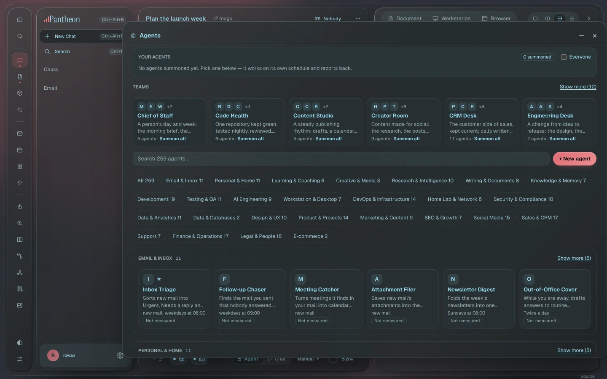
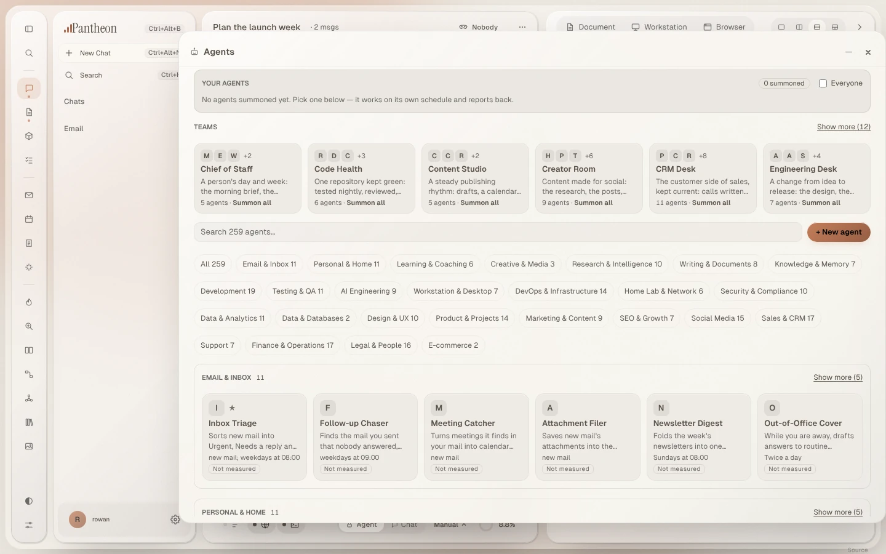
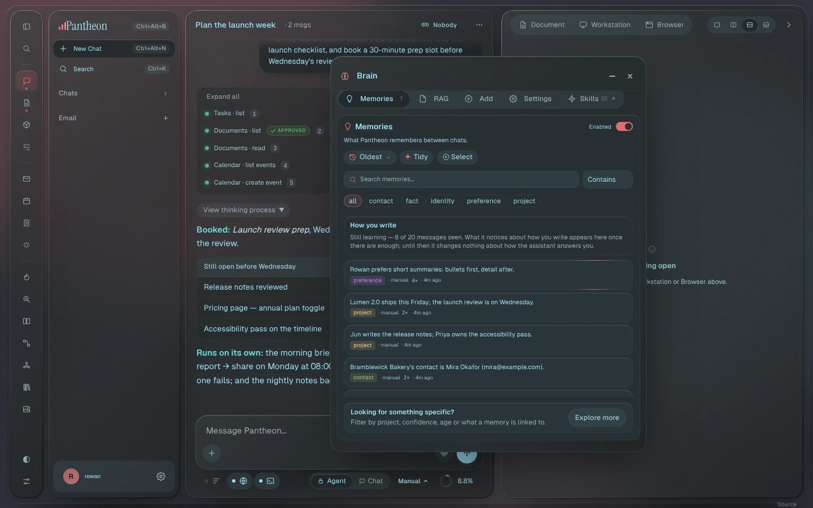
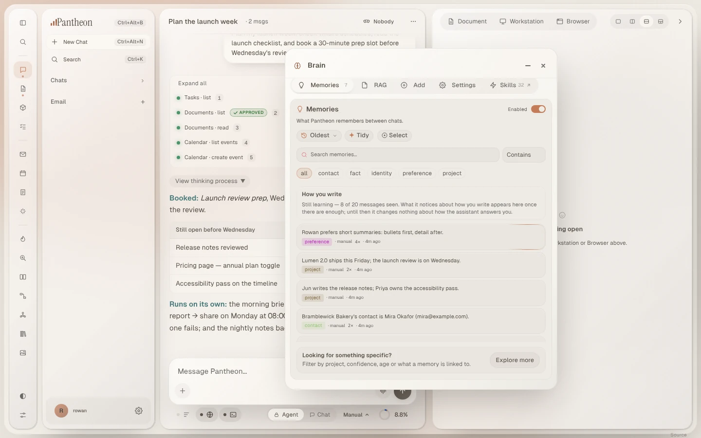

Your personal assistant, no longer cloud bound. Frontier-level strength, locally hosted on your infrastructure, observing your data, and reporting to nobody but you and your teams.
What Apollo is
One partner. One chat. Your whole operation behind it.
Apollo is the assistant built into Pantheon. You talk to it in one standing conversation. It turns what you ask into real tasks, hands each one to a specialist agent, keeps track of every moving part, and comes back with one line when the work is done.
Chat tools wait for you to drive. Apollo drives the work and reports back. It knows your open loops, remembers what you already settled, and only interrupts when something actually needs you.
And it all runs on your server, against the models you choose. What Apollo learns about you lives in Pantheon, not inside a model and not in someone else's cloud account. Swap the model next month and Apollo is still there, with everything it knew.
Your data stays on your hardware. Your assistant answers to you.
Where it fits
Chat is a tool you use. Apollo is a colleague.
Chat and Agent mode
Apollo
Who starts it
You, every time
You, or Apollo on the schedule you set
Lifetime
One conversation
One per person, permanent
Long work
Runs inline and holds the composer
Becomes a task with its own lead agent and chat; you get one line back
Context
The chat plus recalled memories
Your stated rules, its notebook, and live state: tasks, approvals, runs
Output
A transcript
Short messages, a task list, and a pane that shows what is happening
Models
One per chat
One to talk, and whichever model each task's agent needs
How a goal moves
From one sentence to finished work.
You say it
In the chat, by text or by voice call. "Get the Q3 cert renewals sorted before the 30th."
Apollo makes it a task
A record with a state, a next step, a budget, and the one question it is stuck on, if any.
A lead agent takes it
Picked from the roster by fit for the job and for the model it will run on. The lead owns the outcome.
The team works it
The lead delegates, asks, and sends work for review. Every message between agents is logged on the goal.
You hear one line
Done, or the one decision only you can make. Answer it in the pane and the lead picks it back up.
By the numbers
Built to run a fleet, with limits that keep it honest.
259agents in the roster Apollo staffs from, across 26 departments and 18 teams
3levels of delegation at most, with no agent allowed twice in one chain
5clean approvals in a row before Apollo offers to just do that kind of work
0caps on local models. Budgets only ever apply to paid API models
Full capabilities
Everything Apollo does, in one place.
Every line below is in the shipped code. Jump to a part:
One partner chat
The front door to everything Apollo does.
One standing chat per person. Permanent and pinned. It replaces Pantheon's old Assistant chat.
Leads with the point. Short, plain answers. No filler and no flattery.
Pushes back. When a plan has a hole, Apollo says so with the evidence and holds its ground. No setting turns that off.
Real work leaves the chat. Anything longer than a quick answer becomes a task, and the chat gets one line about it. Apollo never calls work done that a task hasn't reported done.
Call it. Start a voice conversation from the pane. Whisper listens and Kokoro speaks, both running on your hardware.
Tasks and the pane
See what Apollo is doing without reading a transcript.
Every goal is a record. Working, Needs you, Waiting or Done, with its next step and the one question it is stuck on.
A side pane, docked beside the chat. Status, Call and Text, Needs you, your Computer and Devices, Activity, Outputs and Open loops.
A report for every task. What it is, where it stands, its budget (editable), and Start or Run again.
Talk to the agent doing the work. Each task has its own chat with its lead, under the report or popped out into a window you can drag. Open several at once. Apollo hears one line about what you said, so the main chat stays clean.
Approvals in one place. Every card a lead is waiting on shows under Needs you. Answer it there.
The agent fleet
Hand Apollo a goal and a team of agents runs it like a company would.
A lead agent per goal. Chosen from the roster by fit for the job and for the model. An agent measured as needing a bigger model is never picked.
Agents work together. They delegate, ask, review, report and escalate. Each message is typed, logged on the goal, and shown in the task's Team view.
Guardrails built in. Delegation goes three levels deep at most. No agent appears twice in a chain. No agent reviews its own work. A delegate never gets more tools than the agent above it, and approval gates follow the work down.
Another agent's report is treated as data. A send after reading one still needs your yes.
It fills its own gaps. When no agent fits, the lead proposes one. A model drafts the agent with its runbook and test cases, it is checked and proven on the model it will run on, and an admin approves, edits or rejects it. Approved agents publish for every account on the server, versioned, with one-step rollback.
Drafted agents stay safe. They can only name tools that already exist, and they can never register an MCP server.
What Apollo knows
An assistant you can read, correct and trust.
Every line on one page. What you told it, and what it worked out, each with the evidence and the date behind it.
Confirm, edit or forget in one tap. Forget means delete.
Hunches stay hunches. Something Apollo only inferred can shape a question or an offer. It never changes what Apollo does until you confirm it.
Memory outlives the model. It lives in Pantheon's Brain on your server. Change models and nothing is lost.
A notebook for loose ends. Open loops stay visible until settled, and anything you already talked through never comes back as news.
Nobody mode means nobody. Apollo keeps nothing from a Nobody mode chat.
Spaces
Separate areas of work and life, enforced by the server.
Spaces and sub-spaces. Each has its own Apollo chat, tasks, notebook and memory. Switch spaces from the top of the chat or the pane.
Layers that make sense. A sub-space reads its parent. A parent sees what is open in its children and what needs you, never their contents.
Read-only grants. Let one space read another's memory or finished work. One way, logged every time it is used, revoked in one tap.
Airgaps. An airgapped space shares nothing in or out. Its memory sits in a sealed store of its own, and briefings show only that something there needs you, with no content.
Local-only. Pin an airgapped space to local models and nothing in it ever runs on a paid API.
Briefings and check-ins
It speaks when it matters, and stays quiet when it doesn't.
First light. Briefings at the times you set. The first one of the day is your morning brief.
Check-ins that only speak on news. Every 1 to 12 hours, or off. If nothing changed since Apollo last spoke, it stays silent. That call is made by Pantheon, without spending a model call.
Quiet hours hold. Nothing lands while you are off.
Voice and trust
A personality you tune, and autonomy it earns.
Two dials. Terse to warm, and dry to playful. Start from a preset: Apollo, Razor, Strategist or Spark.
It adapts, in the open. Apollo can move a dial one step based on how you react. It tells you, and one tap undoes it. It never touches a dial you set in the last week, never repeats a change you undid, and moves each dial at most once a day.
Pushback is measured. Anti-flattery tests run against each model, and the result shows as a badge beside the dials. A model that caves under pressure fails.
"Just do it" is earned. Approve the same kind of action five times in a row without a change and Apollo offers to handle it from then on. You decide. It applies to that action for that kind of work only.
The admin's ceiling always holds. The permission is checked again at every run, and you can take it back in one tap.
Models and budgets
Any model you like, and no surprise bills.
Model-agnostic by design. What Apollo surfaces, task state, approval gates and memory writes are all server rules. The model writes the words and picks the tools, so a local model and a frontier API model give you the same product.
Two roles. One model to talk, and whatever model each task's agent runs best on.
Budgets per goal. Set in tokens, under a cap the admin controls (2 million by default). Work handed down the chain counts against the goal it came from.
Local models run uncapped. The cap only ever applies to paid API models.
The orb
Apollo has a presence on the page.
A small sun, drawn live. It breathes at rest, pulses while you dictate, swirls while Apollo thinks, ripples with its voice when a reply is read aloud, and turns amber when something needs you.
Never docked. Drag it anywhere or nudge it with the arrow keys. Click it to open the pane.
It shows you things. Apollo can glide it to Needs you, Activity, a single task, the message box, or a line range in a code block, and any code editor in Pantheon can register itself so Apollo can highlight lines there too.
On your terms. Keep it still, or switch it off. It follows your system's reduced motion setting.
Built for the server
Ready for enterprise hardware and a whole team.
One Apollo per account. Every task, note, memory line and agent message belongs to its owner. Another person's record answers as if it doesn't exist.
Durable work. Tasks run on Pantheon's scheduler, with a run log, retries, one run at a time per task, and the install's limit on agent runs.
Admin controls. Turn Apollo on per person, set the budget cap, and approve every new agent before anyone can hire it.
Ships with Pantheon. Docker Compose on your own machines, including NVIDIA and AMD GPU setups.
Free and open source, forever. AGPL-3.0-or-later.
Where Apollo works
Standing on everything Pantheon already does.
Apollo runs on the parts of Pantheon people already use: the agent roster it staffs goals from, and the Brain where what it knows about you is kept.


The roster. 259 agents in 26 departments and 18 teams. Apollo picks a lead for each goal from here.


The Brain. Where Apollo keeps what you told it and what it worked out, on your own server.
Screens show Pantheon running on a fictional demo world.
Available now
Apollo is in Pantheon today.
It ships in Pantheon's dev branch. Free, open source, and yours to run on the hardware you own, with the models you trust. Nothing leaves your server unless you send it.
Self-hostedAny modelLocal models uncappedOne Apollo per personAGPL-3.0-or-later